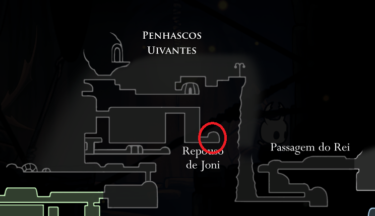

Abençoado por Joni, a gentil herege. Transfigura os fluídos vitais para sangue vital azul. O portador terá uma carapaça mais saúdavel e poderá receber mais dano, porém ele será incapaz de se curar focando ALMA.

Benção De Joni
Encontrado no Penhascos Uivantes, no Repouso de Joni.
